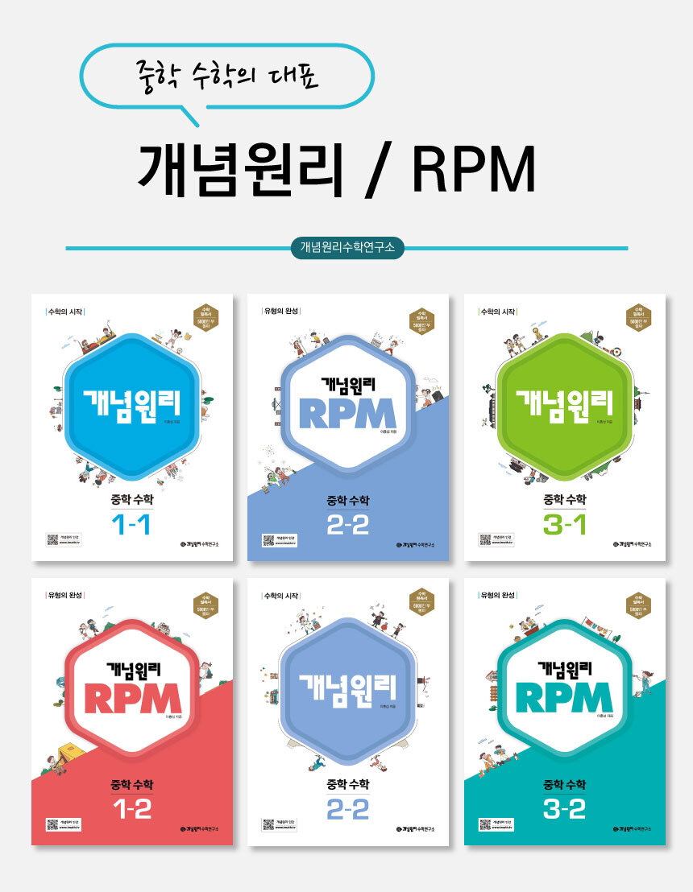
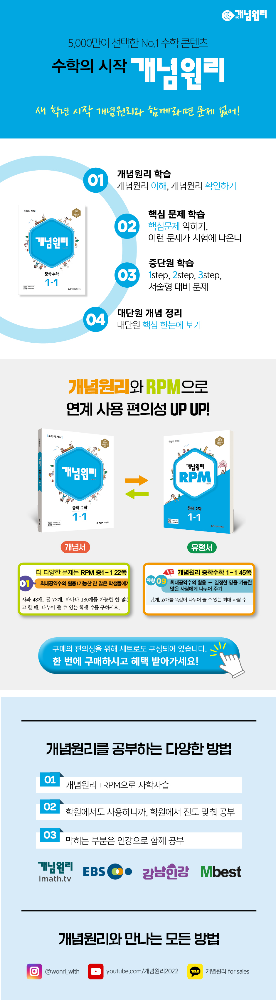
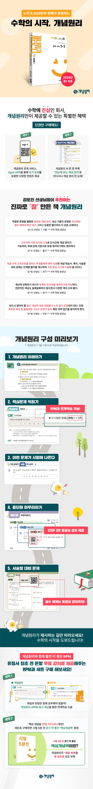
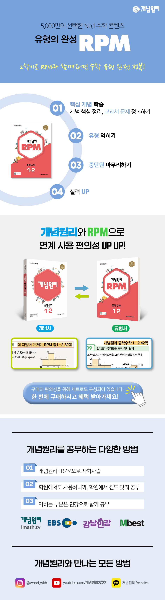
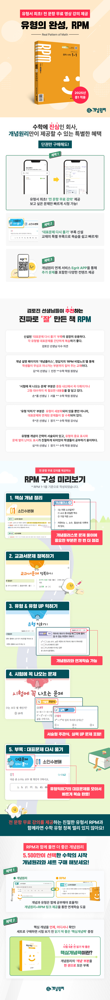

개념원리수학연구소 개념원리 시리즈
<개념원리 중학 수학>
개념원리 중학 수학은 수학을 어렵다는 편견 없이 시작할 수 있도록 학생들의 눈높이에 맞춘 수학 개념기본서이다. 교과서 내용을 충실히 담아 개념과 원리를 확실히 이해하고 문제를 쉬운 것부터 단계적으로 제시하여 차근차근 공부하다보면 수학에 대한 자신감이 생길 수 있다. 단순한 암기식 풀이가 아니라 개념원리에 의한 독특한 교수법으로 새 교육과정에서 요구하는 사고력, 응용력, 창의력을 배양할 수 있도록 기획되어 생각하는 방법을 깨칠 수 있도록 하였다.


<개념원리 rpm 알피엠 중학 수학>
개념원리 RPM 중학 수학은 다양한 유형의 문제를 통해 수학의 문제해결력을 높일 수 있는 문제기본서이다. 전국 중학교 문제를 철저히 분석, 분류하여 유형을 세밀하게 나누어 수학의 모든 유형을 완벽히 마스터할 수 있도록 하였으며, 각 유형의 모든 문제를 난이도별로 분류하였다. 전체 구성을 5단계로 구성하고, 이 중 유형 익히기와 유형 up은 하, 중하, 중, 중상, 상의 5단계 난이도로 세분화하여 체계적으로 수학 실력을 키울 수 있다. 또한 개념원리수학의 필수예제를 유형화하였다. 개념원리 수학기본서의 필수예제를 유형화하고 각 유형에 따른 다양한 문제를 실어 이를 통해 응용력과 문제해결력을 기를 수 있도록 하였고 따라서 개념원리 수학기본서와 연계하여 공부하다 보면 학습 효과가 더욱 높아질 것이다.

